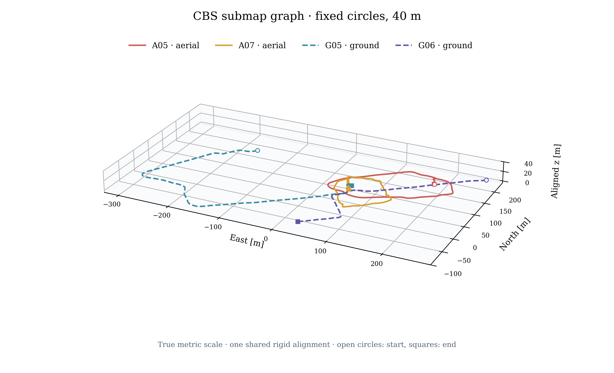

CBS over spatial submap graphs
GRACO · A05, A07, G05, G06 · workstation 148 · 1 October 2026
The fixed-circle CBS graph connects A05, A07, G05 and G06 with 121 owned submap poses and 13 live GPU registration factors. Joint ATE is 0.962 m versus 0.960 m for the centralized circle graph. Relative to 40 m trajectory-centered CBS, graph-stage communication falls by 65.5% and measured CPU time by 27.3%, while joint ATE changes from 0.951 to 0.962 m. These are single-run controls on 148.
New: persistent CBS tested at one iteration every 10 seconds — timing and final validation
All four robots connect in each successful control. All admitted registration factors pass final checks.
Frozen detection and verification are reused; the table measures the new peer-to-peer graph stage. Traffic excludes
retrieval, network headers and discovery. Each CBS run retains the same 100-iteration settling setting.
Persistent propagation repaired and validated.Persistent CBS is now validated on this four-robot circle graph: all four robots reach A05’s reference, with 0.955 m joint ATE after 30 independent iterations at a requested 10-second cadence. Two defects were repaired: disabled multi-hop anchor relay and a factor-slot/variable-key mix-up that discarded odometry initialization. Published loop transforms and all 13 geometry factors pass. Stages remain independently random; no coordinated stage barrier or centralized initialization was added.
Corrected persistent report, timing and evidence
One shared alignment

Every dense trajectory sample is retained. Circle centers remain fixed in the original map; CBS optimizes each
submap’s creation-anchor pose, then the same reconstruction policy is applied to trajectories and map points.
Centralized comparison and BEVs ·
Implementation and measurement specification